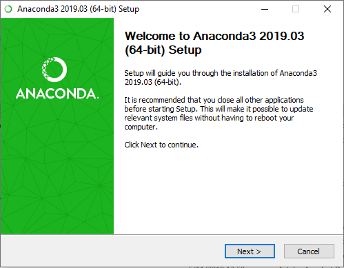
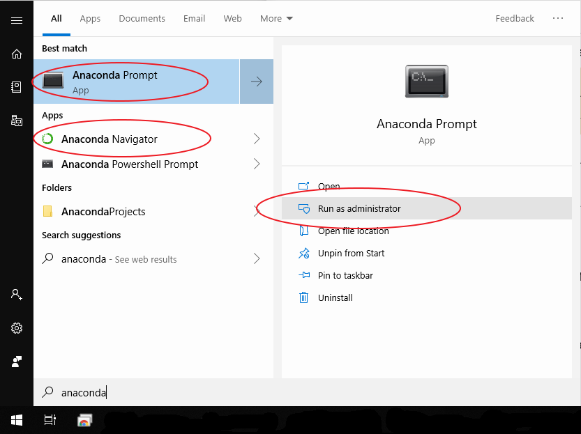
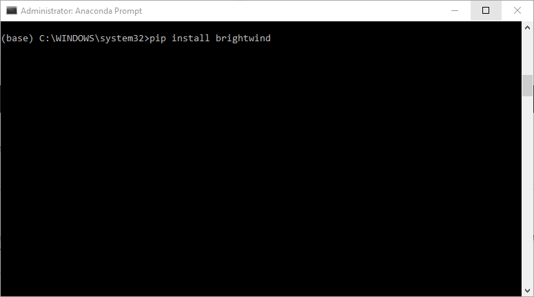
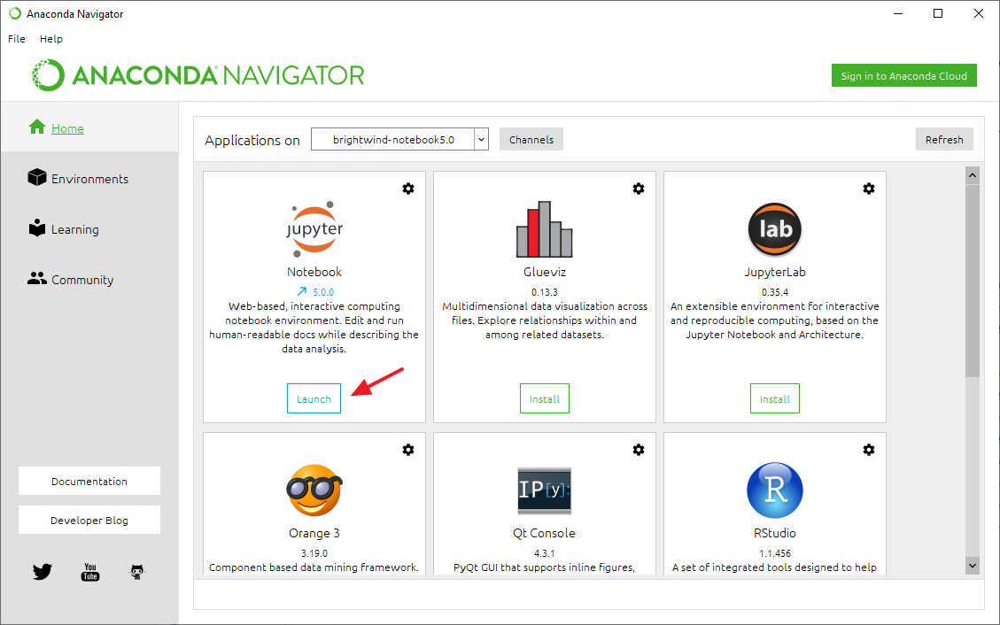
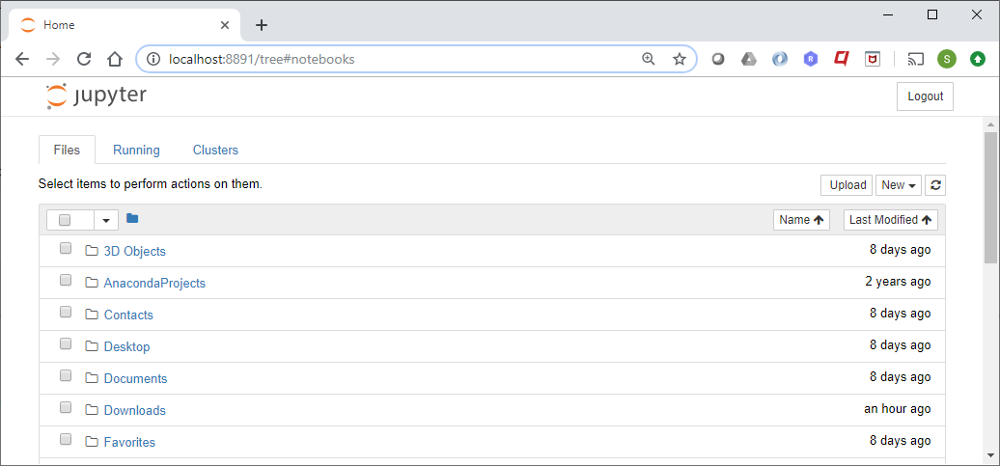
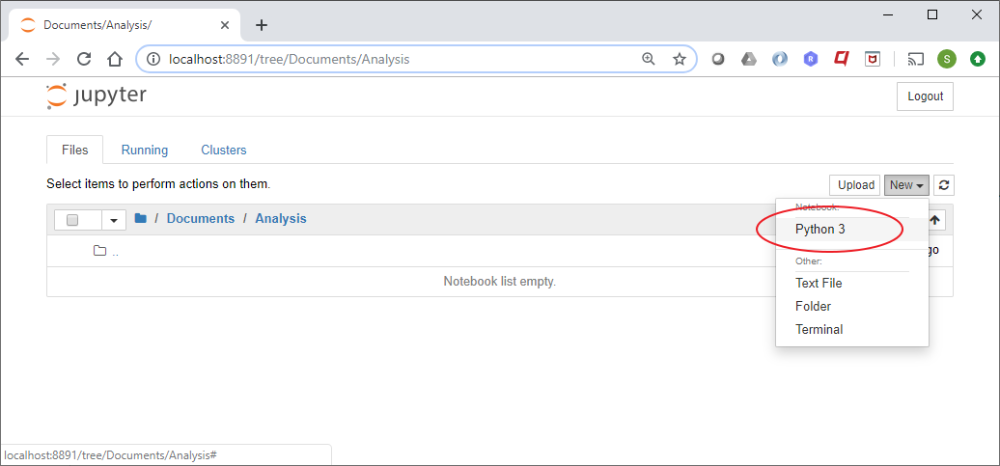
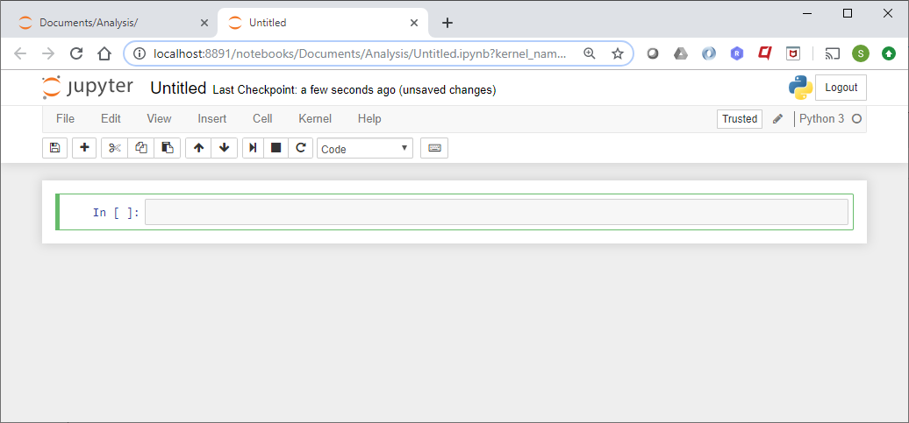
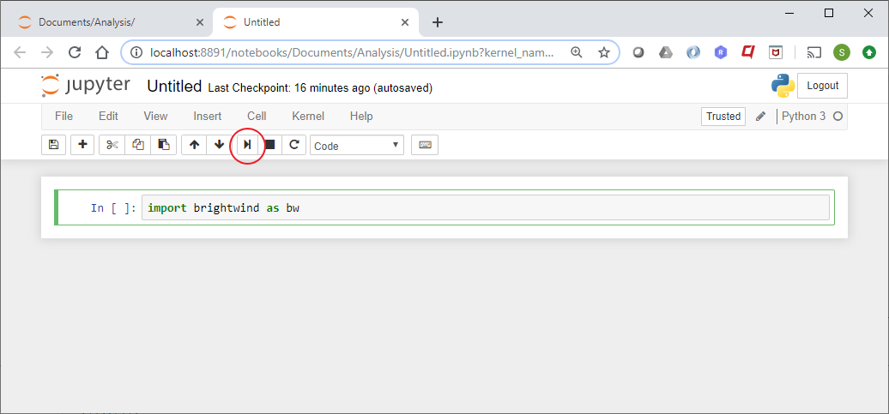
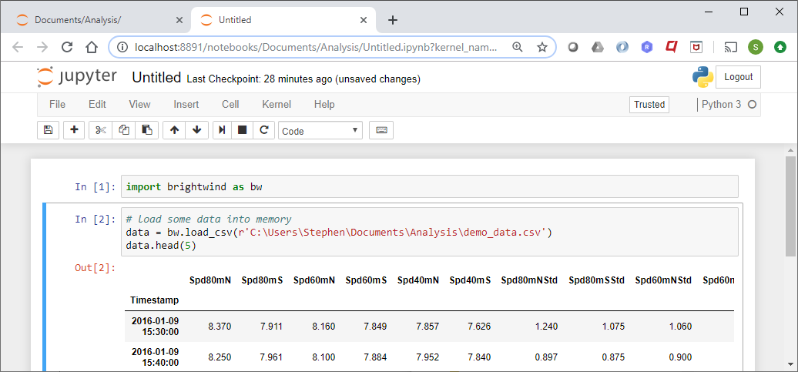

Getting started with the brightwind library on Windows 10¶
Last updated: 12 September, 2019
Outline:¶
This guide will lead you through all the steps and installations required to start using the brightwind library, assuming a basic level of computer knowledge. These steps will include:
Installing the Anaconda Python Distribution
Installing the brightwind library
Using the brightwind library in Jupyter notebooks
Installing the Anaconda Python distribution¶
Anaconda is a free and open-source distribution of the Python and R programming languages for scientific computing that aims to simplify package management and deployment. Anaconda is the easiest way to install Python and all the associated packages for a Windows environment.
Open up the Anaconda download page in a seperate window by clicking https://www.anaconda.com/distribution/.
Make sure you select the Windows icon as Mac OS is selected by default.
Click the download button under the Python 3.7 version. This will download the entire package so may take a while.
Depending on browser you may need to run the downloaded .exe file to install Anaconda and follow the usual prompts. You can find more detailed instructions here https://docs.anaconda.com/anaconda/install/windows/

Installing the brightwind library¶
Once the installation has completed, go to the Start menu and search ‘Anaconda’. Make sure two applications appear, the ‘Anaconda Prompt’ and the ‘Anaconda Navigator’, as shown in the image below. If you cannot see both applications, it is likely that Anaconda did not install properly, as this has been known to occur. Please uninstall and try again.

With the ‘Anaconda Prompt’ highlighted, open this command line interface in administrator mode by clicking ‘Run as Administrator’.
Once opened you can now install the brightwind library using pip. pip is a de facto standard package-management system used to install and manage software packages written in Python. To use simply type:
> pip install brightwind
Note: If you have already installed brightwind and want to get the latest version simply type:
> pip install brightwind --upgrade
If you receive errors stating that the command pip does not exist, it is likely that Anaconda did not install properly. Please uninstall and try again.

Using the brightwind library in Jupyter notebooks¶
The easiest way to use the brightwind library is through Jupyter Notebooks. First open Anaconda Navigator, which you should have installed previously, from the Windows start menu.
Once opened, launch a Jupyter Notebook by clicking the button as shown in the image below. This will open a window in your default web browser.

First page of Jupyter Notebooks is a file explorer.

Navigate to a folder where you want to work in. In this case
../Documents/AnalysisWhen in this folder you can now create a new Notebook. In the top right-hand corner of the screen, click ‘New’ and then ‘Python 3’ to open a new Python kernel. This will open in a new tab.

Opens a new tab where you can use Python and the brightwind library.

In the green highlighted cell type
import brightwind as bwto import the brightwind library.To run this cell you can either click the play button in the menu bar as shown in the image below or use ‘shift’ + ‘Enter’ on your keyboard.

You can now use all the functionaly of the library. The first step of loading some data into memory can be done by typing the following:
data = bw.load_csv(r'C:\Users\Stephen\Documents\Analysis\demo_data.csv')
data.head(5)

To use the brightwind library, please see the next tutorial.
This tutorial can be downloaded as a Jupyter Notebook from the following link: https://github.com/brightwind-dev/brightwind/tree/master/docs/source/tutorials/getting_started_on_windows.ipynb